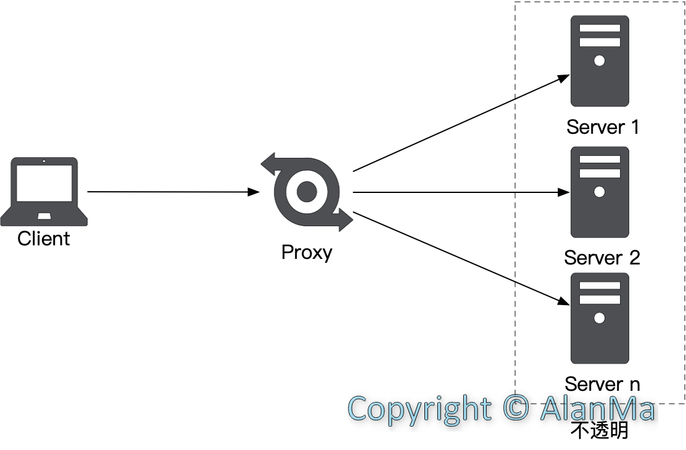
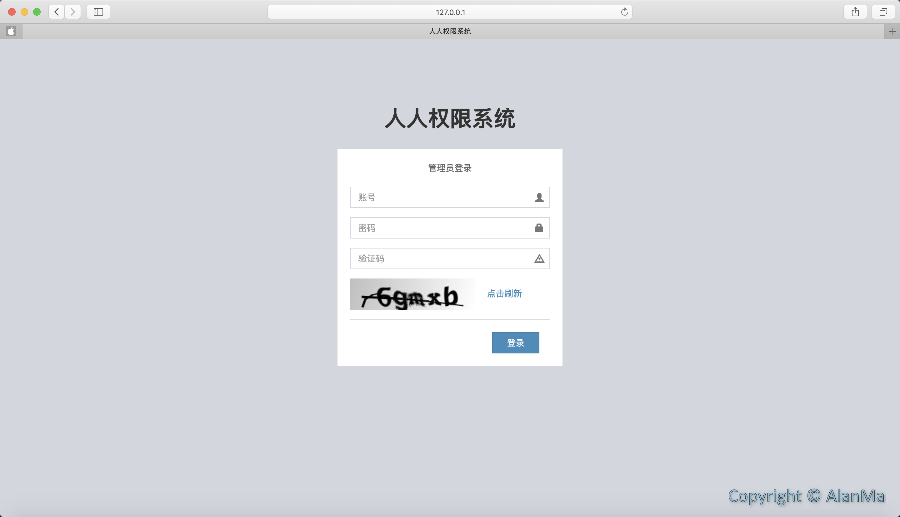

概述 Nginx官方介绍 Nginx (engine x) 是一个高性能的HTTP和反向代理web服务器，同时也提供了IMAP/POP3/SMTP服务。Nginx是由伊戈尔·赛索耶夫为俄罗斯访问量第二的Rambler.ru站点（俄文：Рамблер）开发的，第一个公开版本0.1.0发布于2004年10月4日。
其将源代码以类BSD许可证的形式发布，因它的稳定性、丰富的功能集、示例配置文件和低系统资源的消耗而闻名。2011年6月1日，nginx 1.0.4发布。
Nginx是一款轻量级的Web服务器/反向代理服务器及电子邮件（IMAP/POP3）代理服务器，在BSD-like 协议下发行。其特点是占有内存少，并发能力强，事实上nginx的并发能力确实在同类型的网页服务器中表现较好，中国大陆使用nginx网站用户有：百度、京东、新浪、网易、腾讯、淘宝等。
正向代理与反向代理 代理的意思相信大家都不陌生，我们日常生活中房产中介就是代理，租户向房产中介租赁房屋即可，并不需要知道房屋的真实主人是谁，房产中介对租户透明，房屋主人对租户不透明。
正向代理即Client通过Proxy访问Server时，Proxy对Server透明，而Server并不知道真实的Client是谁，只知道请求来自Proxy，比如我们使用的科学上网代理工具就是一种正向代理工具，Client对Server不透明，有效保护了Client的信息。
反向代理与正向代理正好相反，即Client通过Proxy访问Server时Proxy对Client透明，Server对Client不透明，故Client并不知道自己请求到的是哪个Server,只知道请求的是Proxy，Nginx就是一款典型的反向代理工具，可以进行负载均衡，分发请求至不同的Server。

安装配置 Brew安装 使用brew安装Nginx比较简单，brew可以帮助我们下载一些nginx依赖包，如pcre-deve(为Nginx模块如rewrite提供正则表达式库)、zlib-devel(为模块如gzip提供数据压缩函数库)、openssl-devel(为模块如ssl提供密码算法、证书以及SSL协议等功能)，还可以将可执行文件添加到环境变量中方便使用。
查找Nginx 安装Nginx Brew安装Nginx目录结构 1 2 3 4 5 6 7 8 9 10 11 12 13 14 15 16 17 18 19 nginx version: nginx/1.17.0 built by clang 10.0.1 (clang-1001.0.46.4) built with OpenSSL 1.0.2r 26 Feb 2019 (running with OpenSSL 1.0.2s 28 May 2019) TLS SNI support enabled configure arguments: --prefix=/usr/local/Cellar/nginx/1.17.0 --sbin-path=/usr/local/Cellar/nginx/1.17.0/bin/nginx --with-cc-opt='-I/usr/local/opt/pcre/include -I/usr/local/opt/openssl/include' --with-ld-opt='-L/usr/local/opt/pcre/lib -L/usr/local/opt/openssl/lib' --conf-path=/usr/local/etc/nginx/nginx.conf --pid-path=/usr/local/var/run/nginx.pid --lock-path=/usr/local/var/run/nginx.lock --http-client-body-temp-path=/usr/local/var/run/nginx/client_body_temp --http-proxy-temp-path=/usr/local/var/run/nginx/proxy_temp --http-fastcgi-temp-path=/usr/local/var/run/nginx/fastcgi_temp --http-uwsgi-temp-path=/usr/local/var/run/nginx/uwsgi_temp --http-scgi-temp-path=/usr/local/var/run/nginx/scgi_temp --http-log-path=/usr/local/var/log/nginx/access.log --error-log-path=/usr/local/var/log/nginx/error.log
安装路径 从上述输出可知nginx的安装目录为/usr/local/Cellar/nginx/1.17.0
1 2 3 4 5 /usr/local/Cellar/nginx/1.17 .0 --bin目录：可执行文件； --homebrew.mxcl.nginx.plist文件：mac开机启动文件； --html软连接：前端工程，网站资源文件，此处为软链接实际路径为/usr/local/var /www； --share目录：Nginx源码压缩包和一些示例文档。
配置文件路径 /usr/local/etc/nginx/nginx.conf
源码版Nginx目录结构 以下是nginx编译前的目录
1 2 3 4 5 6 7 8 /usr/local/nginx-1.16 .1 --src目录：源代码； --man目录：帮助文档； --html目录：前端工程，网站资源文件； --contrib目录：第三方文档； --conf目录：配置文件； --auto目录：脚本文件； --configure文件：自动安装脚本，用于检测环境，生成编译代码需要的makefile文件。
文件配置 配置文件结构 1 2 3 4 5 6 7 8 9 10 11 12 13 14 15 16 17 18 19 20 21 22 23 24 25 26 27 28 user{ #指定用户和用户组 ... } events{ #控制连接相关属性 ... } http{ #处理http请求相关配置 ... upstream{ #负载均衡 ... } server{ #主机配置模块 ... location{ #对应目录级别控制 ... } } } includes{ #引入子配置文件 ... }
负载均衡配置 upstream模块可配置负载均衡策略，主要有4种典型的配置方式，具体如下：
轮序方式
根据请求时间顺序，依次分发到不同server，如果其中某个server宕机可以被自动剔除；
1 2 3 4 upstream mxw_server{ server 192.168.1.100; server 192.168.1.101; }
权重方式
weight指定权重，与访问率成正比，用于指定业务，server处理能力不均衡的场景；
1 2 3 4 5 #例如10次访问请求101会被访问8次，100会被访问2次 upstream mxw_server{ server 192.168.1.100 weight=2; server 192.168.1.101 weight=8; }
ip_hash方式
根据ip的hash值分发请求，可以使此ip每次访问到相同的server，可以用于session共享场景；
1 2 3 4 5 upstream mxw_server{ ip_hash; server 192.168.1.100; server 192.168.1.101; }
第三方模块方式
如采用fair时，根据server响应的时间来分发请求，影响时间越短优先级越高；如采用url_hash时，根据url的hash值来分发请求。
1 2 3 4 5 upstream mxw_server{ server 192.168.1.100; server 192.168.1.101; fair; }
重写与重定向配置 用法：
1 rewrite regex replacement [flag];
flag参数配置
last：终止rewrite,继续匹配其他规则；
break：终止rewrite，不在继续匹配；
redirect ：临时重定向，response code为302，搜索引擎抓取新内容同时保留就得网址；
permanent：永久重定向，response code为301，搜索引擎抓取新的内容同时将旧的网址永久替换为重定向之后的网址。
重写配置 如果url中包含api则去掉api将新的内容重写到当前请求，eg：http://www.mxw.com/api/servertime ->http://www.mxw.com/servertime
1 2 3 location /api/{ rewrite ^/api/(.*)/$1 break; }
重定向配置 将url http://www.mxw.com/img-数字.jpg重定向为 http://www.mxw.com/img/数字.jpg
1 2 3 4 5 server{ ... set $name $1; rewrite ^/img-([0-9]+).jpg$/img/$name.jpg permanent; }
关于上诉正则表达式的使用，会在以后的文章中针对正则进行详细说明。
配置示例 主配置文件 /usr/local/etc/nginx/nginx.conf
1 2 3 4 5 6 7 8 9 10 11 12 13 14 15 16 17 18 19 20 21 22 23 24 25 26 27 28 29 30 31 32 33 34 35 36 37 38 39 40 41 42 43 44 45 46 47 48 49 50 51 52 53 user nobody; worker_processes auto; error_log logs/error.log; pid logs/nginx.pid; events { worker_connections 65535; use epoll; multi_accept on; } http { include mime.types; default_type application/octet-stream; log_format main '"" - [] "" ' ' "" ' '""'; access_log logs/access.log main; charset UTF-8; server_tokens off; open_file_cache max=100000 inactive=20s; open_file_cache_valid 30s; open_file_cache_min_uses 20; sendfile on; tcp_nopush on; send_timeout 10; reset_timedout_connection on; client_body_timeout 10; client_header_timeout 10; open_file_cache_errors on; client_header_buffer_size 32k; proxy_connect_timeout 60; proxy_read_timeout 120; proxy_send_timeout 20; proxy_buffer_size 32k; proxy_buffers 4 128k; proxy_busy_buffers_size 256k; proxy_temp_file_write_size 256k; proxy_cache_path /home/cache levels=1:2 keys_zone=cache_one:1024m inactive=3d max_size=2g; keepalive_timeout 10; gzip on; gzip_disable "msie6"; gzip_proxied any; gzip_min_length 1000; gzip_comp_level 4; fastcgi_connect_timeout 300; fastcgi_send_timeout 300; fastcgi_read_timeout 300; fastcgi_buffer_size 64k; fastcgi_buffers 4 64k; fastcgi_busy_buffers_size 128k; fastcgi_temp_file_write_size 128k; client_max_body_size 8m; include /usr/local/etc/nginx/servers/*.conf; }
应用配置文件 /usr/local/etc/nginx/servers/mxw.conf
1 2 3 4 5 6 7 8 9 10 11 12 13 14 15 16 17 18 19 20 upstream mxwmg { server 127.0.0.1:8080 weight=1 max_fails=2 fail_timeout=30s; } upstream rooter { server 192.168.50.1 weight=1 max_fails=2 fail_timeout=30s; } server { listen 80; server_name 127.0.0.1; location /renren-admin { proxy_pass http://mxwmg; } location / { proxy_pass http://rooter; } }
访问http://127.0.0.1/renren-admin/login.html

访问http://127.0.0.1/
常用命令
命令
说明
nginx
启动
nginx -s stop
立即停止
nginx -s quit
优雅停止
nginx -s reload
平滑重启
nginx -s reopen
重新打开日志文件
nginx -c /xxx/nginx.conf
以指定配置文件启动
nginx -t
检测配置文件是否正确
nginx -t -c /xxx/nginx.conf
检测指定配置文件是否正确
nginx -v
显示版本信息
nginx -V
显示版本信息和编译选项
平滑重启原理 Nginx采用多进程管理模式，分为主进程和工作进程，主进程管理工作进程，且主进程一直为启动状态，当接收到nginx -s reload命令时，主进程待工作进程完成工作后，再结束此工作进程，然后根据加载的新配置创建新的工作进程。由于主进程一直为有效状态，所以重启过程中不会漏掉请求，故称之为平滑重启。
Trouble Shooting 端口被占用 1 2 3 4 5 6 7 alanma@MacBook-Pro:/usr/local/Cellar/nginx/1.17.0/share/nginx/src$ nginx nginx: [emerg] bind() to 0.0.0.0:80 failed (48: Address already in use) nginx: [emerg] bind() to 0.0.0.0:80 failed (48: Address already in use) nginx: [emerg] bind() to 0.0.0.0:80 failed (48: Address already in use) nginx: [emerg] bind() to 0.0.0.0:80 failed (48: Address already in use) nginx: [emerg] bind() to 0.0.0.0:80 failed (48: Address already in use) nginx: [emerg] still could not bind()
查看端口使用情况
杀掉进程修改应用端口为非80